Model Development
The domain of a fixed bed system contains fluid phase and solid phase. The fluid phase enters and leaves the domain through its boundaries (i.e. the top and bottom of a column) while the solid phase remains stationary within the domain. Fixed bed models are built upon the conservation of mass for a species in a phase over a differential column slice, consisting of terms for accumulation (first term) of species in a phase in the domain and advective transport (second term) of species in a phase through the domain
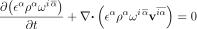
(1)where
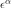
is the volume fraction of phase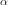
,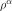
is the density of phase ,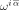
is the mass fraction of species in phase , and
in phase , and 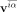
is the velocity vector of species in phase .
Transport of species in a phase can occur through both advection and random (Brownian) motion of the species within the phase (i.e. molecular diffusion). Therefore, the species velocity is split into the bulk velocity and the deviation from the bulk velocity due to molecular diffusion
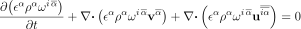
(2)where
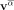
is the velocity vector of phase and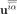
is the velocity of species in phase due to molecular diffusion. The velocity of species in phase
due to molecular diffusion can be approximated using Fick’s First Law
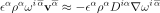
(3)where
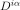
is the diffusion coefficient of species in phase . Eqn (2)
can now be written as
(4)
When mass exchange (adsorption) occurs between the phases, another term is added to Eqn (4)
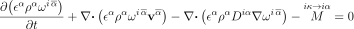
(5)where
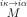
is the rate of transfer of species between phases. Eqn (5) is the governing conservation of mass equation from which all transport equations are derived.Models
Nomenclature
in phase in phase due to molecular diffusion in phase  : interstitial velocity of the fluid phase
: interstitial velocity of the fluid phase : species concentration in fluid phase
: species concentration in fluid phase : axial diffusion coefficient of the species in the fluid phase
: axial diffusion coefficient of the species in the fluid phase : species concentration in the fluid phase entering the column
: species concentration in the fluid phase entering the column : error function
: error function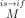
: rate of transfer of species between phases : species concentration in the solid phase
: species concentration in the solid phase : superficial velocity of the fluid phase (
: superficial velocity of the fluid phase ( )
) : effective diffusion coefficient of species in the particle domain
: effective diffusion coefficient of species in the particle domain : diffusion coefficient of species in the pore liquid
: diffusion coefficient of species in the pore liquid : diffusion coefficient of species in the solid phase
: diffusion coefficient of species in the solid phase : maximum concentration of species in solid phase
: maximum concentration of species in solid phase : forward reaction rate constant in Langmuir sink
: forward reaction rate constant in Langmuir sink : reverse reaction rate constant in Langmuir sink
: reverse reaction rate constant in Langmuir sink : adsorbate species
: adsorbate species : available sorption site
: available sorption site : product of the adsorption reaction
: product of the adsorption reaction : solid phase concentration at equilibrium
: solid phase concentration at equilibrium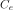
: fluid phase concentration at equilibrium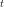
: time : time in bed volumes treated
: time in bed volumes treated : Thomas model rate constant
: Thomas model rate constant : mass of solid phase in the bed
: mass of solid phase in the bed : bed volume
: bed volume : Langmuir dissociation constant (
: Langmuir dissociation constant ( )
) : zero-order Bessel function of the first kind
: zero-order Bessel function of the first kind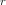
: parameter in the Thomas analytical solution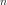
: parameter in the Thomas analytical solution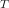
: parameter in the Thomas analytical solution : function in the Thomas analytical solution
: function in the Thomas analytical solution : film transfer coefficient
: film transfer coefficient : total surface area available for mass transfer
: total surface area available for mass transfer : number of particles in the bed
: number of particles in the bed : surface area of a spherical particle
: surface area of a spherical particle : Freundlich capacity constant
: Freundlich capacity constant : Freundlich intensity constant
: Freundlich intensity constant : particle diameter
: particle diameter : liquid diffusivity of the species in water
: liquid diffusivity of the species in water : molar volume of the species at its boiling point in phase
: molar volume of the species at its boiling point in phase  : bed void fraction
: bed void fraction : apparent density of the solid phase
: apparent density of the solid phase : bed density
: bed density 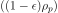
 : particle porosity
: particle porosity : density of water
: density of water : dynamic viscosity of water
: dynamic viscosity of water : particle tortuosity
: particle tortuosityReferences
G. S. Bohart and E. Q. Adams. Some aspects of the behavior of charcoal with respect to chlorine.1. Journal of the American Chemical Society, 42(3):523–544, 1920. doi:10.1021/ja01448a018.
Khim Hoong Chu. Fixed bed sorption: setting the record straight on the bohart-adams and thomas models. Journal of Hazardous Materials, 177:1006–1012, 5 2010. doi:10.1016/j.jhazmat.2010.01.019.
Gary Friedman. Mathematical modeling of multicomponent adsorption in batch and fixed-bed reactors. Master's thesis, Michigan Technical University, 1984. URL: https://www.proquest.com/dissertations-theses/mathematical-modeling-multicomponent-adsorption/docview/220041433/se-2.
A. Ogata, R.B. Banks, United States. Department of the Interior, and Geological Survey (U.S.). A Solution of the Differential Equation of Longitudinal Dispersion in Porous Media: Fluid Movement in Earth Materials. Geological Survey professional paper. U.S. Government Printing Office, 1961. URL: https://books.google.com/books?id=mDVEtSpqTSUC.
Henry C Thomas. Heterogeneous ion exchange in a flowing system. Journal of the American Chemical Society, 66:1664–1666, 10 1944. URL: https://pubs.acs.org/doi/abs/10.1021/ja01238a017, doi:10.1021/ja01238a017.